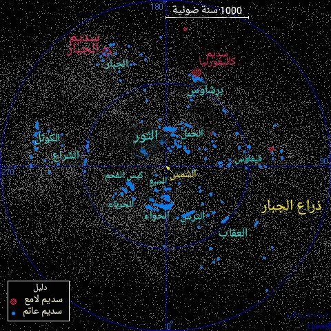

و يطلق عليها في بعض الأحيان اسم سدم الامتصاص و هي تجمعات مركزة من الغاز و الغبار و نجوم في داخلها قيد النشأة. يمكن رؤية السديم العاتم عندما يحجب ضوء سديم لامع خلفه و مثال ذلك سديم رأس الحصان ، أو إذا كان في موقع يحجب فيه ضوء نجوم خلفه و مثال ذلك سديم كيس الفحم (coalsack).
هنا خريطة تظهر الكثير من السدم العاتمة ضمن مقياس 2000 سنة ضوئية محددة ضمن المستوى المجري. يظهر في الخريطة موضع 742 سديما عاتمة و هي مؤرشفةمن قبل Dutra و Bica. كما تم تحديد موضع عدة سدم لامعة أيضا. تعتبر السدم العاتمة مكانا هاما لنشأة النجوم ضمن ذراع الجبار. مثال ذلك عنقود الثريا الشهير يتألف من نجوم حارة و فتية تشكلت داخل غيمة عاتمة في كوكبة الثور.
|  |
المناطق الرئيسية للسدم العاتمة
Major Dark Nebula Regions
-----------------------------
Name Equatorial Galactic Distance
Coordinates Coordinates (ly)
RA Dec l° b°
Aries 03 00 +19.5 160 -34 330
Perseus 03 52 +33.2 161 -16 1150
Taurus 04 37 +27.7 172 -13 460
Orion 05 52 +02.3 204 -12 1500
Puppis 07 39 -44.9 258 -11 1500
Puppis 08 21 -36.6 255 0 1400
Vela 08 27 -50.4 267 -7 1000
Coalsack 12 25 -63.7 300 -1 520
Musca 12 28 -70.8 301 -8 490
Chamaeleon 12 34 -77.8 302 -15 590
Lupus 15 45 -34.5 339 +16 460
Lupus 16 01 -39.7 338 +10 470
Ophiuchus 16 31 -22.9 355 +17 520
Ophiuchus 16 50 -14.2 5 +19 520
Scorpius 17 11 -39.8 347 0 490
Ophiuchus 17 22 -24.3 1 +7 520
Scutum 18 33 -06.6 25 +1 650
Corona Austr. 19 14 -36.7 1 -20 520
Aquila 19 19 +11.1 46 -1 1000
Vulpecula 19 22 +23.2 57 +4 650
Cepheus 20 42 +58.6 95 +10 1400
Cepheus 20 56 +67.2 103 +14 1000
|
هذا المخطط يظهر الغيوم الجزيئية المتوضعة على المستوى المجري لدرب التبانة:
في الأسفل لائحة بأشهر السدم العاتمة و يفترض بأن جميعها مرئية بالتلسكوبات الصغيرة على الرغم من أنني لا أستطيع الجزم في ذلك :)
1 2 3 4 5 6 7 8 9
Barnard Common Equatorial Galactic Size Distance Con
Number Name Coordinates Coordinates arcmins (ly)
RA Dec l° b°
B33 Horsehead 05 40.9 -02 28 207.0 -16.8 6'x4' 1400 Ori
- Coalsack 12 53.0 -63 00 303.1 -0.1 400'x300' 500 Cru
B42 Rho Ophiuchi 16 25.5 -23 26 353.7 +17.7 30'x30' 500 Oph
B65/6/7 Pipe (stem) 17 20.0 -26 54 358.6 +5.9 300'x60' 500 Oph
B72 Snake 17 23.6 -23 37 1.8 +7.0 30'x30' 600 Oph
B78 Pipe (bowl) 17 32.7 -25 36 1.3 +4.2 200'x140' 500 Oph
B86 Ink Spot 18 03.0 -27 52 2.9 -2.8 5'x3' ? Sgr
B87 Parrot's Head 18 04.2 -32 30 358.9 -5.2 12'x12' 1000 Sgr
B92 18 15.6 -18 14 12.7 -0.6 15'x15' 650 Sgr
B133 19 06.2 -06 54 28.5 -6.4 10'x5' 1000 Aql
B143 19 41.4 +11 00 48.5 -5.9 30'x30' ? Aql
B348/9 Northern Coalsack 20 34.4 +42 06 81.0 +1.1 240'x240' ? Cyg
B352 20 57.2 +45 54 86.5 +0.3 15'x3' 1900 Cyg
B168 21 53.4 +47 16 94.4 -5.5 100'x10' ? Cyg
|
العمود 1: تصنيف برنارد للسدم العاتمة. العمود 2: الاسم الشائع للسدم العاتمة. العمود 3: إحداثي المطلع المستقيم بالساعات و الدقائق وفق الحولية الفلكية عام 2000. العمود 4: إحداثي الميل بالدرجات و الدقائق وفق الحولية الفلكية عام 2000. العمود 5: إحداثي الطول المجري بالدرجات القوسية. العمود 6: إحداثي العرض المجري بالدرجات القوسية. العمود 7: الحجم الزاوي للسديم العاتم مقدرا بالدقائق القوسية. العمود 8: المسافة المقدرة إلى السديم العاتم بالسنوات الضوئية (قيم تقريبية). العمود 9: الكوكبة التي يتبع لها السديم العاتم.
References:
Barnard E, (1927), A photographic Atlas of selected regions of the Milky Way,
Carnegie Inst. Washington.
Hilton J, Lahulla J, (1995), Distance measurements of Lynds galactic dark
nebulae, Astron Astrophys Supp, 113, 325.
Dutra C, Bica E, (2002), A catalogue of dust clouds in the Galaxy, Astron
Astrophys, 383, 631.
|